|
|
Lesson Contents | In this Lesson, lesson you will learn how to create the Process Timeline for the course sample project. |
In the Training folder, create a new folder named "Processes". Once you have created this folder, navigate to it, and, once inside the Processes folder, select “Timeline Definition” from the Create New… dropdown that is located on the upper right of the Process Director screen. The Create Timeline Definition screen will open.
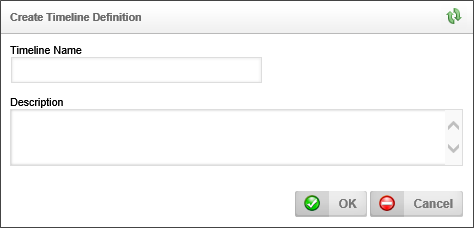
In the Timeline Name box, type "PR/PO Process", then click the OK button to create the Process Timeline.
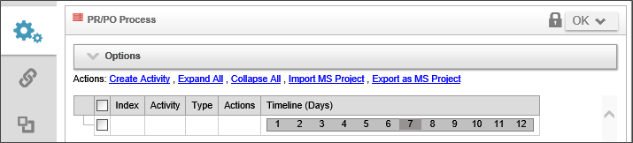
In Module 2, Lesson 6, we created an email template for notification emails. Process Director enables you to assign email templates to a Process Timeline as the default notification template, or to a Process Timeline activity, to use as the notification template for a specific activity. In this case, we have a single email template to use as the default template for the whole process.
To set this default template, click on the Options section to expand it. In the Options section, click on the Build button of the Object Picker for the Default Email Template in this Timeline property.
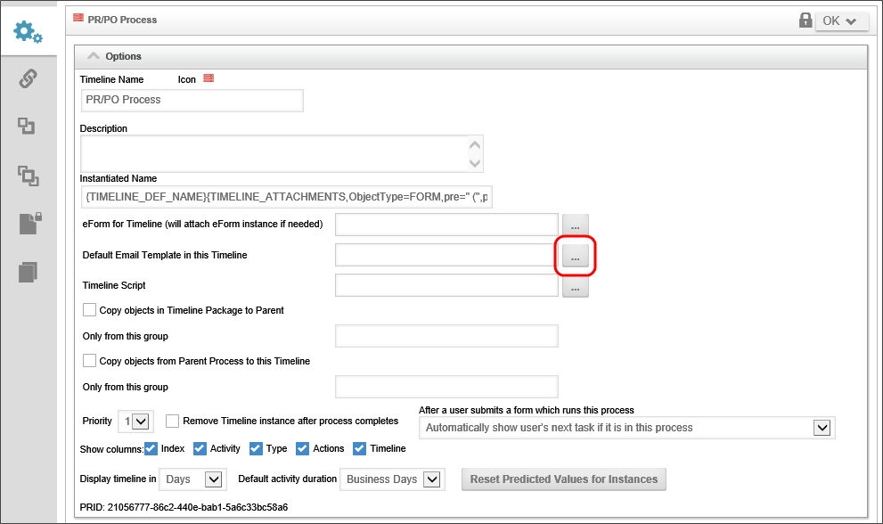
When you click the Build button, the Choose Email Template dialog box will appear. Navigate to the folder containing the email template we created earlier, and select the Notification Email Template, which will return you automatically to the Process Timeline definition.
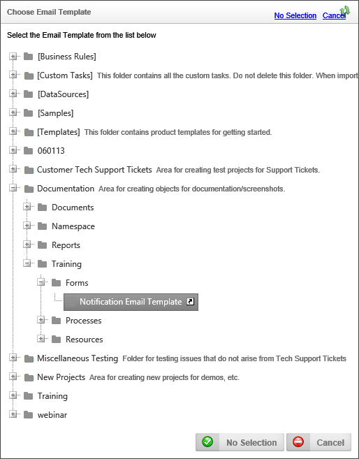
The Default Email Template in this Timeline property will now display "Notification Email Template", indicating that the email template has not been set as the default template for the timeline.
Now we are ready to create the activities that will constitute the PR Approval process that will be started when we submit our Purchase Request Form.
Click on the link labeled, "Create Activity" to create the first Process Timeline Activity of the approval process.
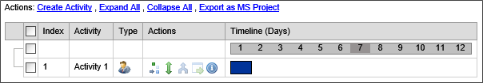
Double-click on the activity name, which should be "Activity 1", to open the configuration dialog box for the activity.
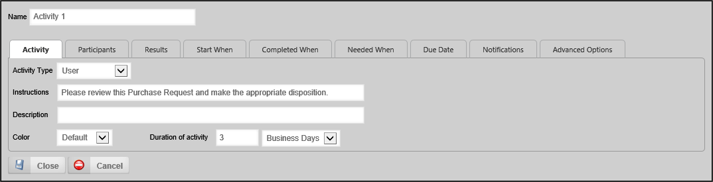
Change the Name of the activity to "Manager Approval".
The default display tab will be the Activity tab. The default Activity Type property for new activities is the User activity. As mentioned in Lesson 2 of this module, a User activity will assign a task to a specified user (or users), and place the task in the user's task list, where it will remain until the user completes the task.
Set the Instructions property to "Please review this Purchase Request and make the appropriate disposition".
Set the Duration of activity to 3 Business Days.
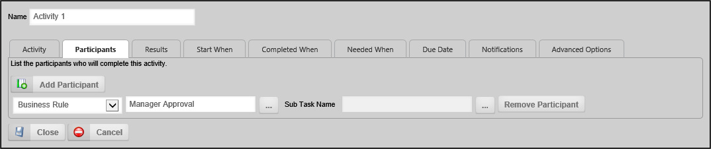
The default participant for a user activity is the Timeline Initiator. We are going to change this to use one of the Business Rules we previously created to supply the participant. Change dropdown from "Timeline Initiator" to "Business Rule Value". Once you have changed the dropdown, an object picker will appear. Click on the Object Picker's Build button to open the Choose Business Rule dialog box.
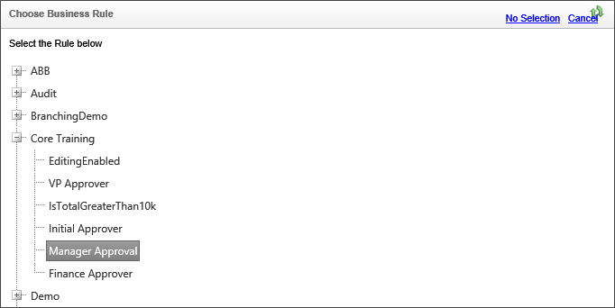
From the Core Training section of the dialog box, click on Manager Approval. The dialog box will automatically close, and "Manager Approval" will be displayed in the text box portion of the Object Picker.
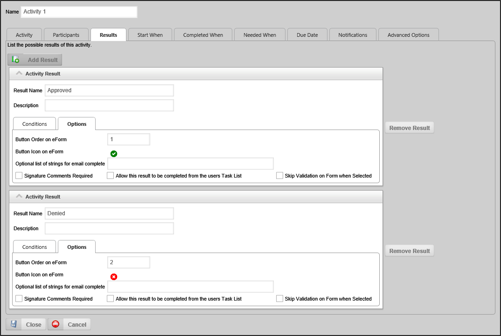
The Results tab is where we configure the possible results of a user activity. Each result that is configured on this tab will display as an option button on the bottom of the Form. The user will select the result button that completes the activity. In the case of this activity, we want to add results for approval or disapproval.
Add the first result by clicking the Add Result button. The first result will automatically appear in the dialog box. Change the Result Name from "Activity Result" to "Approved". Click the Options tab in the result box to show the configuration options for the result.
You should always show consistency across all your implementation projects in terms of how approval options are displayed to users. At BP Logix, our recommended practice is to always show the most positive result (e.g., Approval) first, and most negative result (e.g., Disapproval) last. Additional results should be placed between the approval and disapproval. Since we want the approval result to display as the first button, i.e., the button on the left side of the row of result buttons, change the Button Order on Form property to "1".
Result buttons can be configured to display icons on the button, and Process Director comes configured with a number of standard button icons. As a default, the Button Icon on Form property is configured to show no Icon. We will change this to an approval icon by clicking on the "no icon" symbol next to the Button Icon on Form property.
When you click on the "no icon" symbol (), an Icon Chooser dialog box will open that displays the icon set installed with Process Director. The Icon Chooser has different tabs, each of which display different icons/color options. As you can see from the sample image above, we have selected a check mark icon for the Approval, and an X icon for the Denial.
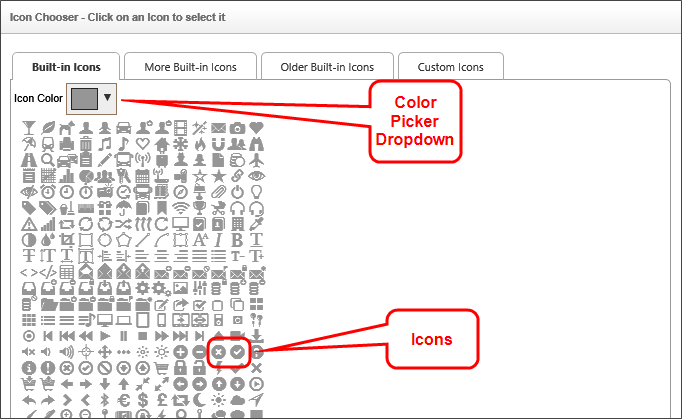
To choose an icon, select the desired color from the Icon Color picker, then click on the desired icon. When you click on the icon, your choice will be saved and the Icon Chooser will close automatically. Your selected icon will be displayed in the result settings.
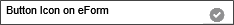
We are now finished with the first result. To add a second result, click the Add Result button again. For the new result, set the Result Name from "Activity Result" to "Denied", then click the Options tab in the result box to show the configuration options for the result. In the Options tab, change the Button Order on Form property to "2", and set the icon to display the disapproval icon highlighted in the image above.
The configuration settings for this activity are now complete, so click the Update dropdown menu item in the upper right corner of the screen to close the configuration dialog box and save the changes you made.
Click on the Create Activity link to create the second Process Timeline Activity of the approval process. Double-click on the activity name for the new activity, which should be "Activity 2", to open the configuration dialog box for the activity.
Change the Name of the activity to "VP Approval".
Set the Instructions property to "Please review this Purchase Request and make the appropriate disposition".
Change the Participant dropdown from "Timeline Initiator" to "Business Rule Value", then choose the VP Approver Business Rule we created in Module 3, Lesson 2.
The results for this activity should be the same as the results in the Manager Approval activity we created previously. Create an "Approved" and "Denied" result, then set the proper button order and icon for each result.
As mentioned in Module 1, Lesson 2, most activities have a dependence on one or more other activities. Dependence refers to the requirement that an activity cannot begin until a predecessor activity, or activities, ends. This type of relationship (often referred to by project managers as finish-to-start) represents the most fundamental starting condition for any activity. The Start When tab is where these dependencies are defined. Since we do not want the VP Approval activity to begin until the Manager Approval activity has ended, we need to create a dependency on the Manager Approval activity.
Click the Add Dependencies button, and a dropdown menu will appear below the button. From the dropdown menu, select "Manager Approval".
There is an alternate method of setting dependencies by dragging and dropping activities from within the Process Timeline definition. Each timeline activity has a dependency icon (). You can click and hold the mouse button over the dependency icon for the dependent activity and drag-and-drop the activity onto the activity for which you want to create the dependency. In this case, you would drag the VP Approval activity onto the Manager Approval activity as illustrated below.
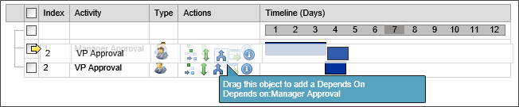
It is not uncommon to have a Process Timeline activity that you might not want to run every time the process runs. Certainly, in an approval process, if an approver disapproves a request you neither need nor want subsequent approvers to see the rejected request.
In the case of our current process, in addition to handling rejections in the Manager Approval activity, we also only want the VP Approval task to run when the amount of the purchase order exceeds $10,000. Indeed, that is the reason we previously created the IsTotalgreaterThan10K Business Rule. The Needed When tab is where we will implement the rules that will determine if the VP Approval task runs.
Click the link labeled "Click to Create Condition" to open the Condition Builder. In the Condition Builder, click the Add Condition button to add a blank condition. Click the Build button next to the Condition Picker labeled "None" to open the Choose System Variable dialog box from which we will chose the object we wish to evaluate. The build button is highlighted in the image below.
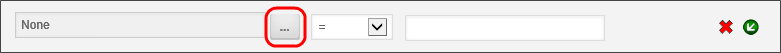
From the dropdown menu labeled "None", select the IsTotalGreaterThan10k Business Rule, then click the OK button to close the Choose System Variable dialog box.
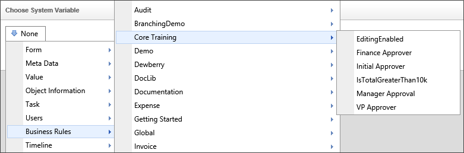
Ensure that the Object Picker in the Condition Builder is now labeled, "IsTotalGreaterThan10k", and that the Operator dropdown next to it is labeled "Is True". If so, the first condition we need to configure is complete.
To add a second condition, click the And Condition icon () located on the right side of the condition we just created. We want to create an [AND] condition because both conditions must evaluate to "True" for the VP Approval activity to run. When you click the And Condition icon, a new blank condition will appear below the first condition.
In the second condition, click the Build button to open the Choose System Variable dialog box. In the Choose System Variable dialog box, select "Activity Result" from the dropdown menu, as illustrated below.
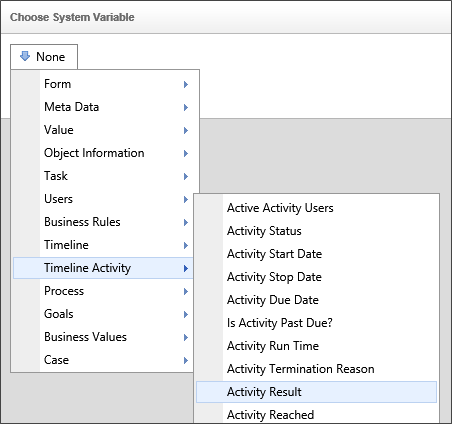
When you select "Activity Result" from the dropdown menu, a dropdown containing a list of Process Timeline activities will appear. Select "Manager Approval" from the dropdown, then click the OK button to close the Choose System Variable dialog box.
In the Condition Builder, ensure the Object Picker is labeled, "Activity Result [Manager Approval]" and that the Operator dropdown is set to "=". Type the word "Approved" in the text box to the right of the Operator dropdown, to let Process Director know that we only want the VP Approval activity to run if the Manager Approval activity result is "Approved".
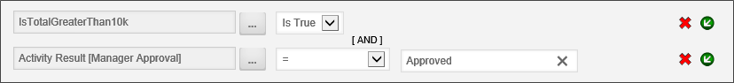
Click the OK button to save your conditions, and close the Condition Builder, which will return you to the Needed When tab of the VP Approval activity. The conditions we just configured should now appear in the tab.
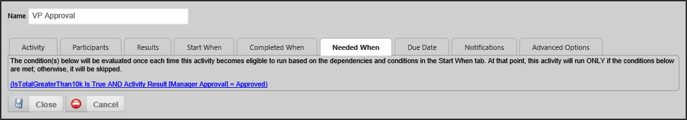
We have now completed the configuration of the VP Approval activity, so click the Close button for the configuration screen, then click the Update dropdown menu to save the configuration changes.